NIGHT-FLIGHT COLOR SYSTEM · DARK / HARD / HIGH-CONTRAST
One palette.
Every instrument.
Apollo carries a near-black Gruvbox lineage across the interfaces where work happens—without losing state, syntax, or focus on the way.
- 01 / SOURCEapollo.json
- 02 / MAPsemantic roles
- 03 / PORT17 repositories
- 04 / RUNyour interfaces
SOURCE OF TRUTH / SCHEMA 1
Color telemetry
The values below are read from the canonical Apollo palette. Bright black is reserved for ANSI output and never carries body text.
Base palette
- Canvas
#141617 - Raised
#1d2021 - Primary
#cfbc97 - Secondary
#d5c4a1 - Inactive
#928374 - Focus
#fabd2f - Selection
#3c3836 - Danger
#fb4934 - Success
#b8bb26 - Info
#83a598 - Magenta
#d3869b - Cyan
#8ec07c
ANSI
- Black
#1d2021 - Red
#fb4934 - Green
#b8bb26 - Yellow
#fabd2f - Blue
#83a598 - Magenta
#d3869b - Cyan
#8ec07c - White
#d5c4a1
Bright
- Bright black
#665c54ANSI only - Bright red
#fb4934 - Bright green
#b8bb26 - Bright yellow
#fabd2f - Bright blue
#83a598 - Bright magenta
#d3869b - Bright cyan
#8ec07c - Bright white
#fbf1c7
PORT MANIFEST / 17 PERMANENT TARGETS
The same signal, tuned to each cockpit.
Every view below is an explicit simulation, built to show how Apollo’s roles behave in that interface family.
PORT 01 / 17 · TERMINAL
SonicTerm
The reference shell keeps the signal visible.
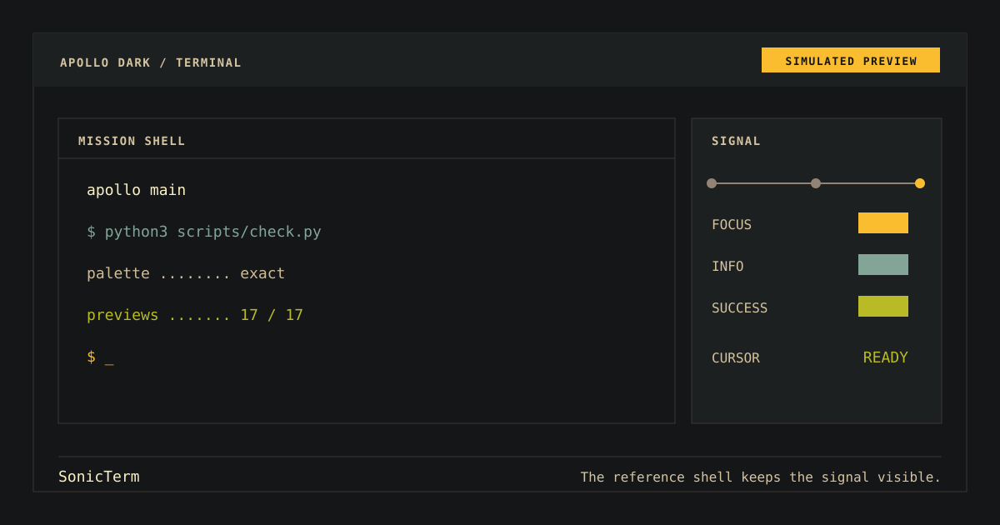
PORT 02 / 17 · TERMINAL
WezTerm
Lua tabs and panes on one flight deck.
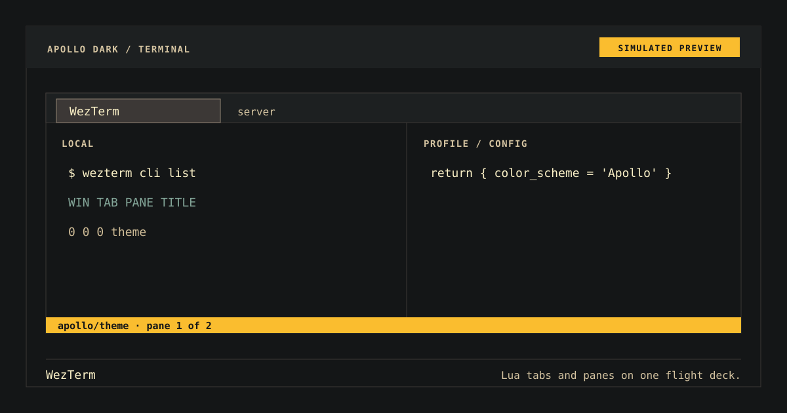
PORT 03 / 17 · TERMINAL
iTerm2
A macOS split session with a quiet profile rail.
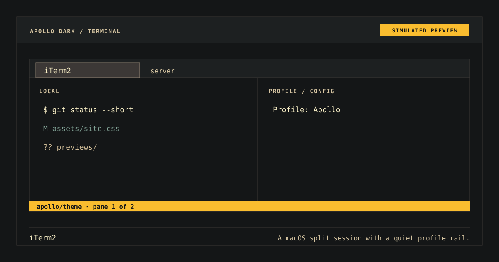
PORT 04 / 17 · TERMINAL
Apple Terminal
The native terminal reduced to the essential readout.
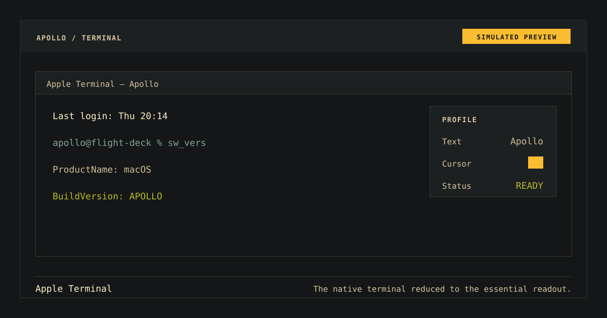
PORT 05 / 17 · TERMINAL
Alacritty
GPU-accelerated output without competing chrome.
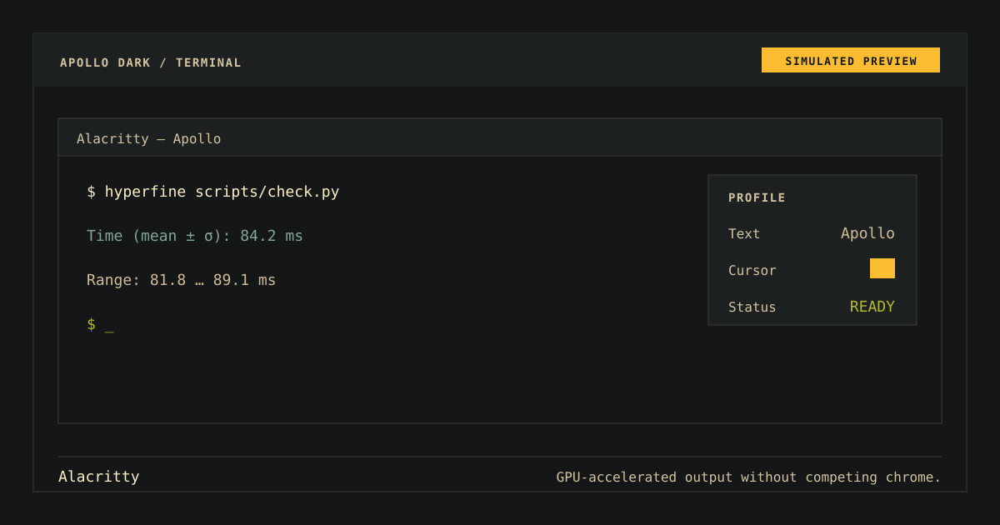
PORT 06 / 17 · TERMINAL
Windows Terminal
PowerShell tabs, search, and command feedback.
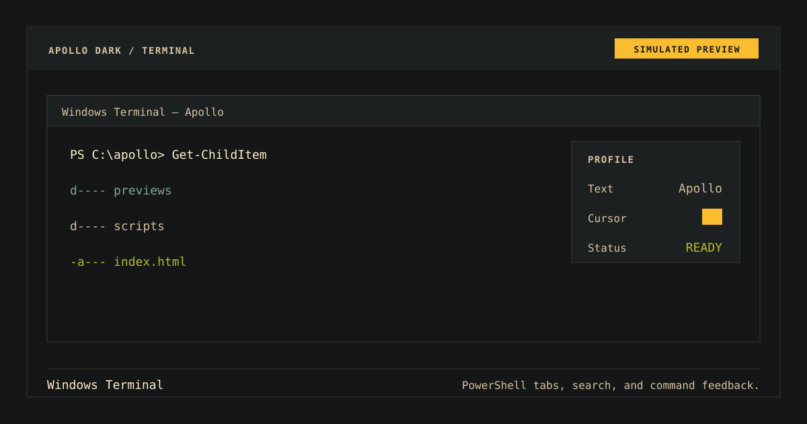
PORT 07 / 17 · BROWSER
Firefox
Browser chrome and web surfaces share one night palette.
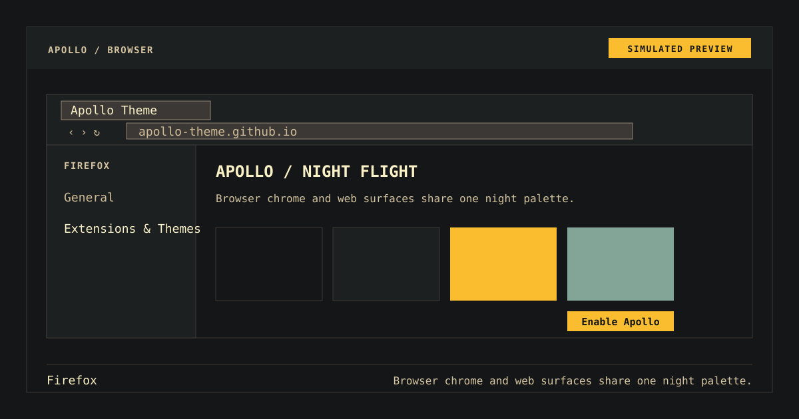
PORT 08 / 17 · EDITOR
VS Code
Explorer, source, diagnostics, and status in balance.
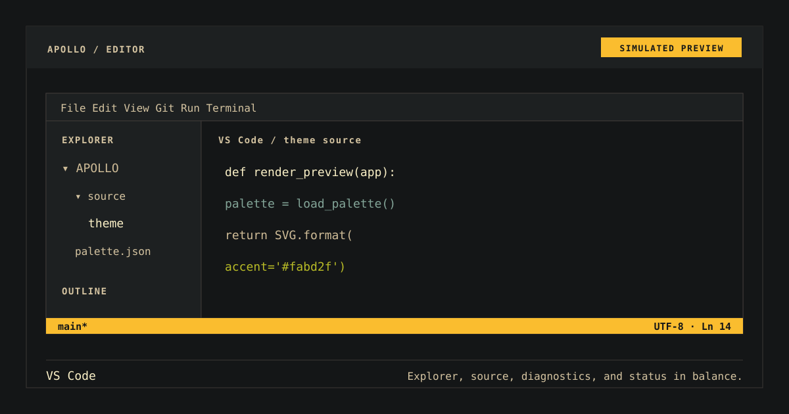
PORT 09 / 17 · EDITOR
Visual Studio
A dense IDE surface with legible hierarchy.
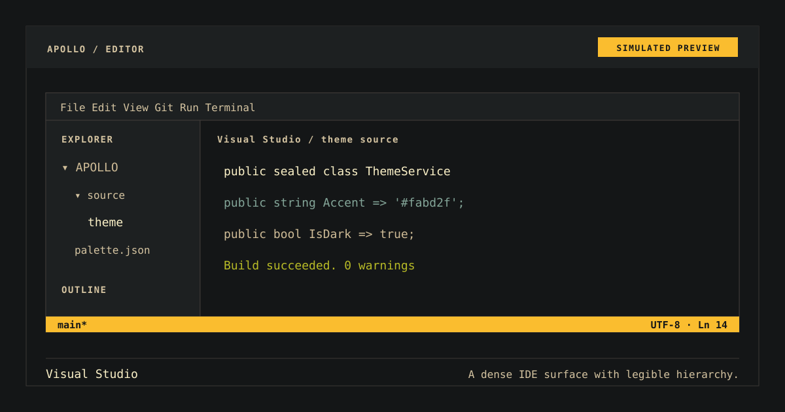
PORT 10 / 17 · EDITOR
Vim
Modal state stays unmistakable.
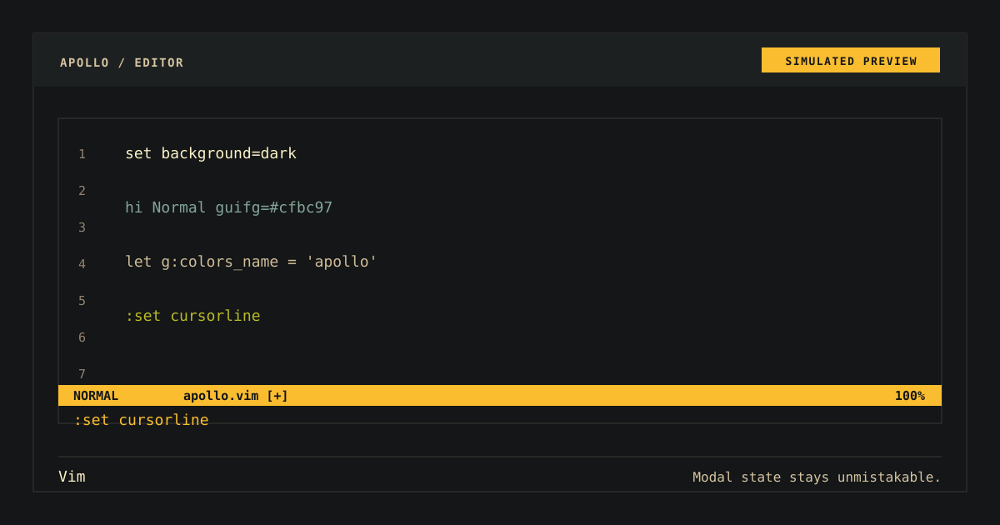
PORT 11 / 17 · EDITOR
Neovim
A Lua workspace with tree, source, and diagnostics.
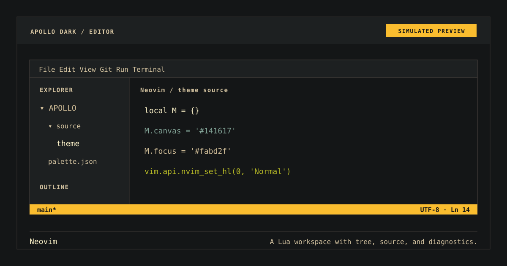
PORT 12 / 17 · EDITOR
Xcode
Navigator, source, inspector, and console on one plane.
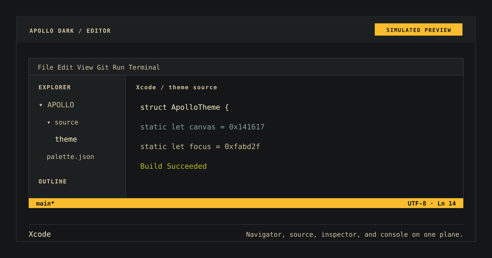
PORT 13 / 17 · MULTIPLEXER
tmux
Three shell contexts joined by a clear status rail.
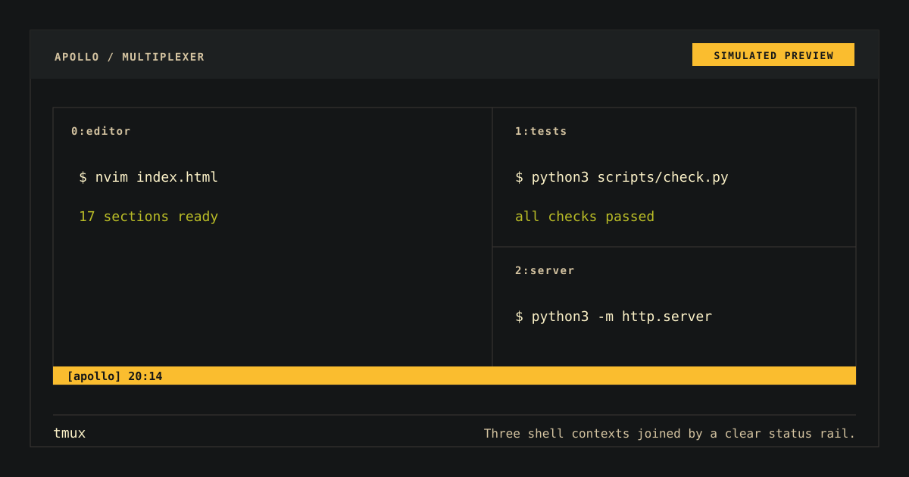
PORT 14 / 17 · MULTIPLEXER
RMUX
Session orchestration as a compact mission board.
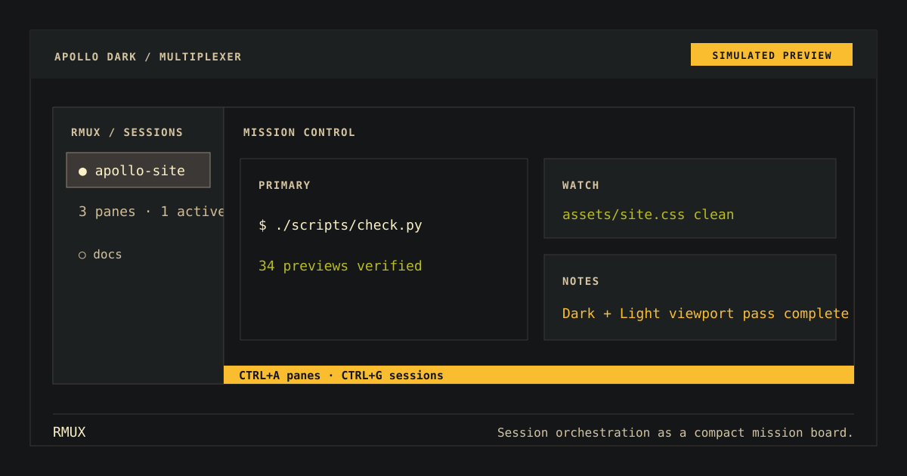
PORT 15 / 17 · SHELL
PowerShell
Structured command output with unmistakable state.
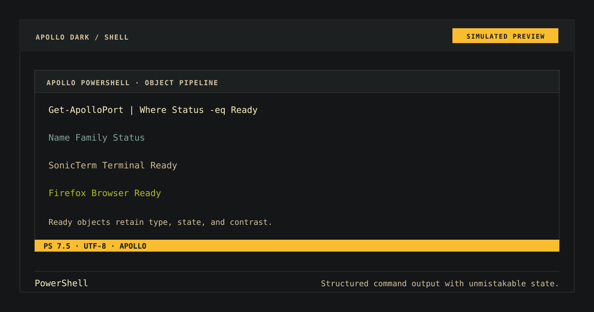
PORT 16 / 17 · UTILITY
bat
Source output with line, syntax, and change context.
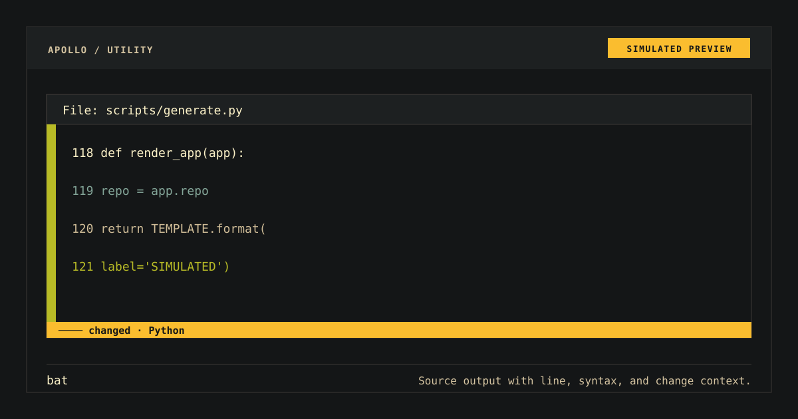
PORT 17 / 17 · UTILITY
eza
File metadata aligned for a fast visual scan.
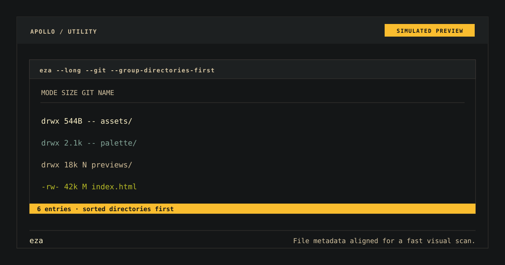
OPEN SYSTEM / MIT
Inspect the source before you fly.
Every port traces back to the canonical repository, the exact palette JSON, and an MIT license.
LINEAGE / THANKS
Built on a well-lit lineage.
Thank you to Gruvbox for the color language and SonicTerm for the near-black flight deck that became Apollo’s starting point.